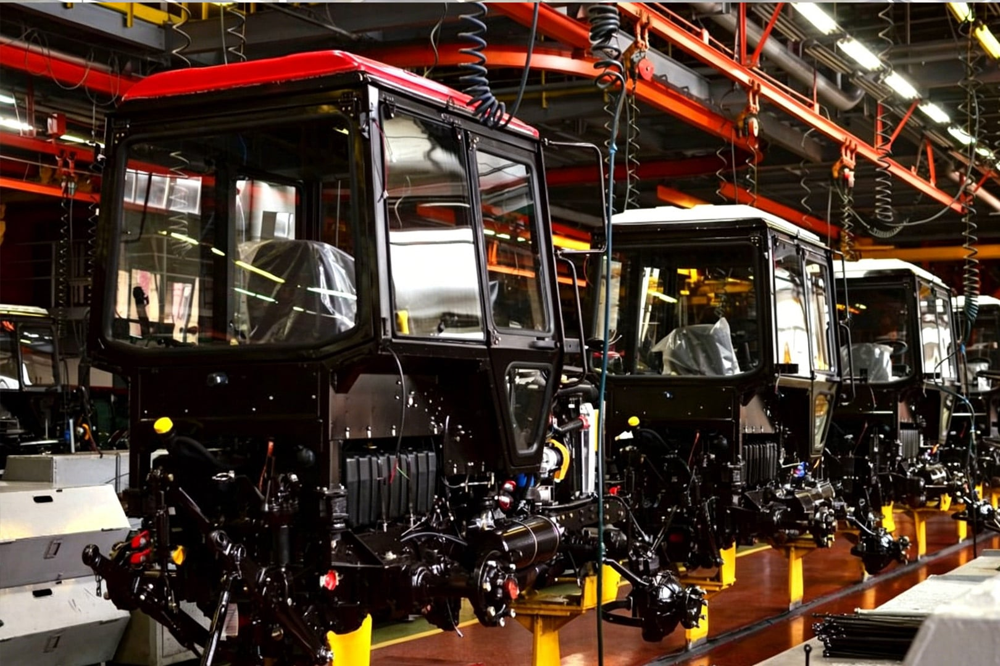

Die Exporte chinesischer Landmaschinenteile erreichen jährlich etwa 5,4 Mrd. USD. Im Laufe der Zeit haben sich auf der Grundlage regionaler Industriefundamente fünf differenzierte OEM-Industriecluster herausgebildet: Nordchina, Ostchina, Zentralchina, Südchina und Westchina. Jede Region hat unterschiedliche Stärken in der Lieferkette entwickelt, die durch lokale landwirtschaftliche Gegebenheiten und industrielle Fähigkeiten geprägt sind und verschiedene Arten von internationalen Beschaffungsbedürfnissen bedienen.
Nordchina-Cluster: Zentrum für grundlegende Komponenten in großen Stückzahlen
Der größte Produktionsstandort gemessen an der Anzahl der Fabriken, spezialisiert auf Getriebe, Antriebswellen und hydraulische Basiskomponenten. Bietet starke Kostenvorteile und ein ausgereiftes Vertriebsökosystem mit zahlreichen kleinen und mittleren Bearbeitungsbetrieben. Geeignet für kostengünstige Standardverbrauchsgüter in kleinen Stückzahlen, wie z. B. Rotorfräsmesser und Anhängerkupplungsteile.
Ostchina-Cluster: Umfassende integrierte Versorgungsbasis
Mit der vollständigsten industriellen Wertschöpfungskette produziert diese Region komplette Baugruppen für Traktoren und Mähdrescher, einschließlich Guss-, Blech- und Hydrauliksystemen. Viele Fabriken verfügen über OEM-Erfahrung mit führenden globalen Landmaschinenmarken. Bekannt für stabile Qualitätskontrolle und umfangreiche Exporterfahrung, was sie zu einem bevorzugten Zentrum für große OEM-Montagen macht.
Südchina-Cluster: Hochwertige intelligente Komponenten für die Berglandwirtschaft
Konzentriert auf kleine Landmaschinen für Hügel- und Bergregionen, spezialisiert auf elektronische Steuerungssysteme und leichte Präzisionsteile. Zu den Hauptprodukten gehören Mikrofräsgetriebe und ferngesteuerte Raupenfahrwerksysteme. Starke Vorteile in hochpreisigen Nischensegmenten, mit durchschnittlichen Stückpreisen, die 20–30 % über dem inländischen Durchschnitt liegen.
Zentralchina-Cluster: Kernzentrum für Traktor-Getriebekomponenten
Ein wichtiger Knotenpunkt für Traktorantriebssysteme in China, spezialisiert auf Getriebe, Hinterachsen, Differenziale und Kupplungen. Bekannt für hohe Bearbeitungspräzision und gute Austauschbarkeit, geeignet für Wartungs- und OEM-Montageprojekte für landwirtschaftliche Maschinen mittlerer und hoher Leistung.
Westchina-Cluster: Vollständiges Ökosystem für Mikrofrästechnik
Angetrieben durch das bergige Gelände hat diese Region eine weltweit wettbewerbsfähige Lieferkette für Mikrofräsen entwickelt. Konzentriert sich auf Motorblöcke, Kurbelwellen und Getriebegehäuse. Die Produkte sind bekannt für Langlebigkeit und Kosteneffizienz und werden in großem Umfang nach Südostasien und in afrikanische Agrarmärkte exportiert.

Geschätzte Verteilung der Betriebe für Landmaschinenteile in China (Branchenreferenz)
Basierend auf öffentlichen Branchendaten verteilt sich die Fabrikanzahl auf die Cluster etwa wie folgt:
Nordchina: ~35 %
Ostchina: ~32 %
Zentralchina: ~12 %
Südchina: ~10 %
Westchina: ~11 %
Hinweis: Verteilung und Exportvolumen können je nach Marktlage variieren. Die Daten dienen nur als Referenz für die Beschaffungsplanung.
Unser Team ist in den wichtigsten Industrieregionen Chinas tätig und hilft internationalen Käufern, ihre Beschaffungsanforderungen mit den am besten geeigneten Ursprungsfabriken abzustimmen – unter Abwägung von Kosten, Qualität und Lieferleistung.